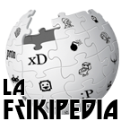

Plantilla:Bienvenido
 De: La Frikipedia, la enciclopedia extremadamente seria.
De: La Frikipedia, la enciclopedia extremadamente seria.
|
|

|
|
Vienbenido/a seas a la Frikipedia Bienvenido
|
|
Parece que eres nuevo/a en la Frikipedia, lugar de rojifachas comunistafascistas comeniños. Si quieres que tus creaciones puedan llamarse artículos y formen parte de esta fuente de saber, te recomendamos que primero leas esto:
Presta especial atención a los Consejos Básicos.
|
Si necesitas ayuda para crear tu primer artículo, prueba nuestro asistente que te guiará por el buen camino 
Breve manual para nuevos usuarios
Bienvenido seas, Bienvenido, veo que eres un usuario nuevo, por lo tanto estas son algunas cosillas que debes saber antes de comenzar tu vida frikipedil...
Se admite en La Frikipedia
-
 Escribir artículos satíricos o paródicos acerca de algo o alguien que sea reconocido por lo menos nacionalmente (no olvides colocarle a tus artículos la plantilla {{enobras}}).
Escribir artículos satíricos o paródicos acerca de algo o alguien que sea reconocido por lo menos nacionalmente (no olvides colocarle a tus artículos la plantilla {{enobras}}).
- Leer todas las ayudas al pie de la letra.
- Puedes reclamar por algún artículo que creas molesto o insultante en la discusión del artículo, o bien, dejar un mensaje en la discusión de algún administrador (ten en cuenta que tu reclamo puede no ser escuchado si no expresas tus argumentos claramente y con respeto).
- Mejorar artículos que necesiten ser expandidos, ampliados, ortografiados o los que han sido abandonados por sus autores originales.
- Participar en Proyectos o Portales para ganar premios por tus obras dignas de reconocerse, o igualmente puedes ayudar y ganar participando en el Mantenimiento del sitio.
- Subir imágenes para ilustrar tus obras o para algún artículo que lo necesite (indispensable: rango de frikipedista junior, hasta entonces, puedes buscar una en nuestro amplio Álbum de fotos).
NO se admite en La Frikipedia
-
 Escribir artículos acerca de la vecinita, el primo, el perro, el bravucón de tu escuela o de alguien que solo tú conozcas.
Escribir artículos acerca de la vecinita, el primo, el perro, el bravucón de tu escuela o de alguien que solo tú conozcas.
- Escribir en idioma Hoygan o Mésenller en los artículos que hagas (escribe Hola en lugar de oLa), las faltas de ortografía puedes corregirlas con Güor o algún otro procesador de texto.
- Escribir artículos que incluyan contenidos racistas, cerdacos, que inciten al odio o de lleno tengan puros insultos, eso supone un Golpe de Remo y el borrado inmediato del artículo.
- Escribir artículos repetidos, simplemente porque no te gusta el que ya existe, y puede ser borrado a menos que el contenido que haya en él sea digno de fusionar con el existente.
- Copypastear cualquier artículo de alguna web de humor u otra wiki como Inciclopedia (o peor aún de Kiwipedia). El artículo será borrado sin contemplaciones.
- Insultar usuarios, blanquear o quitar contenido (parcial o total) de páginas, que te puede costar un bloqueo.
- Expandir inútilmente listas con ítems aleatorios y que no vengan al caso (del tipo Tú / Yo / Chuck Norris / Tu mamá / etc.)
- Hacer un artículo que incluya a Chuck Norris, si un artículo peca de chucknorritis se le dará al mismo una patada giratoria (no es coña, evítalo...)
- Subir imágenes Pr0n, desagradables o con Copyright... a todo lo anterior, Golpe de Remo.
Para crear tu bienvenida personalizada, escribe
{{Bienvenido
|color_fondo =
|color_borde =
|color_letra =
|imagen_bienvenida =
|título_intro =
|texto_intro =
|OK =
|NO =
|texto_despedida =
}}
El significado de los parámetros es el siguiente:
- color_fondo
- El color de fondo del recuadro de bienvenida.
- color_borde
- El color del borde del recuadro.
- color_letra
- El color del texto del recuadro. Ten en cuenta que haya contraste con el color de fondo (para fondo oscuro, letra clara, y viceversa).
- imagen_bienvenida
- La imagen del recuadro. DEBE ser un logo de La Frikipedia.
- título_intro
- El título del saludo posterior al recuadro.
- texto_intro
- El saludo propiamente dicho.
- OK
- El ícono que identifica las cosas que se pueden y/o deben hacer (solo nombre de archivo Y extensión).
- NO
- El ícono que identifica las cosas que NO se deben hacer (solo nombre de archivo Y extensión).
- texto_despedida
- Una breve despedida ofreciendo ayuda adicional o invitando a un proyecto que te interese patrocinar.
Todos los parámetros son optativos y tienen un valor por defecto predeterminado para el caso de que los omitas.
NO uses los colores Red, Green o Blue (
#FF0000 ,
#00FF00 o
#0000FF por sus códigos hexadecimales) puesto que estos colores queman los ojos. Usa variantes de los mismos (si necesitas ayuda con los colores entra
aquí).
Autor(es):
- Krusher
- Nexo
- JALAJANDRO
- Doctor grijander
- MURO DE AGUAS
- Frikiman
- Alex2610
- Khazike Khashondo
- El Sevillano
- ArreKarallo
Frikipedia 2005-2016, Licencia
GFDL 1.2 - Extraído por FrikiLeaks